Agents out-type you
Hundreds of lines land in minutes. Reading them line by line in a diff can't keep up — so you start skimming, then trusting, then guessing.
Open source · macOS · Windows · Linux
CodeDiver is a desktop app your coding agent can drive. It walks you through the code, explains functions step by step, draws how execution flows, and puts every change it wants to make in front of you to approve. The agent keeps the speed. You keep the understanding.
Works with Claude Code, Cursor, VS Code, Claude Desktop, Codex — anything that speaks MCP.
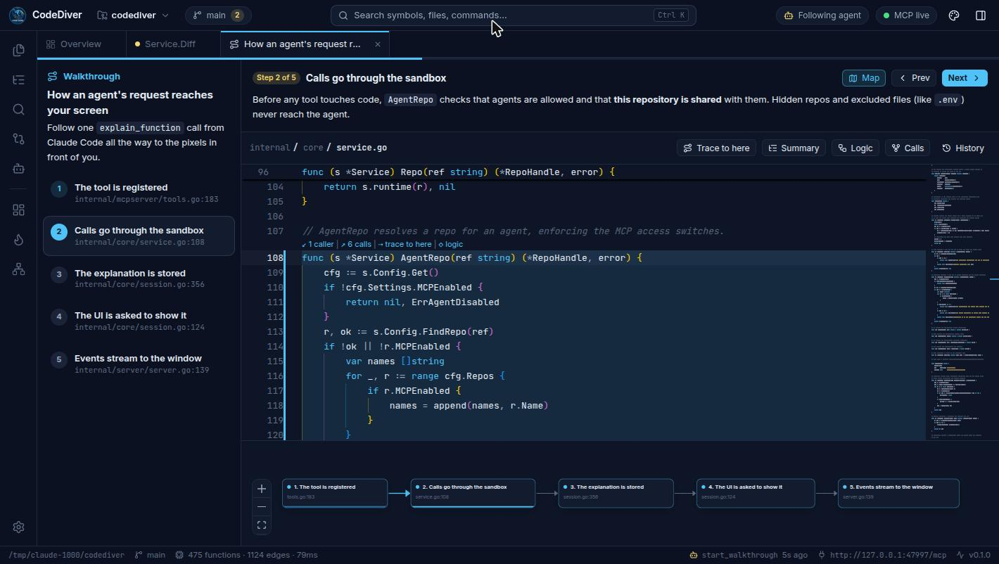
Hundreds of lines land in minutes. Reading them line by line in a diff can't keep up — so you start skimming, then trusting, then guessing.
A diff tells you what changed. It doesn't tell you which functions are affected, who calls them, or how the request actually flows now.
When something breaks at 2am, it's your codebase. The mental model has to live in your head — not just in a chat transcript.
CodeDiver gives your agent a screen to show its work — and gives you the tools to see the codebase for yourself.
How it works
CodeDiver indexes it locally — call graphs, types, control flow, git history. Nothing leaves your machine.
One command adds CodeDiver as an MCP server. Your agent can now see the code the way you do — and show you things.
claude mcp add --transport http codediver http://127.0.0.1:47474/mcp
Ask “walk me through this” or “fix that bug”. The agent opens views in front of you, explains as it goes, and proposes changes you accept or reject.
Built-in MCP server
Most agents can only answer in text. With CodeDiver connected, they can open the code you're talking about, draw the graph that explains it, and narrate the logic block by block — while you watch. Turn on Follow agent and every view it shows opens in front of you.
Explain the function I have open — what goes in, what comes out, and how it works.
get_developer_context→ views.go · Service.Diffget_function_flow→ 16 blocks, 5 inputs, 2 outputsexplain_function→ shown in CodeDiverI've opened the logic view for Service.Diff. Each step on the right is pinned to the block it describes — start at step 1.
What actually calls this?
trace_toshow: trueEvery path from the entry points is on your screen now.
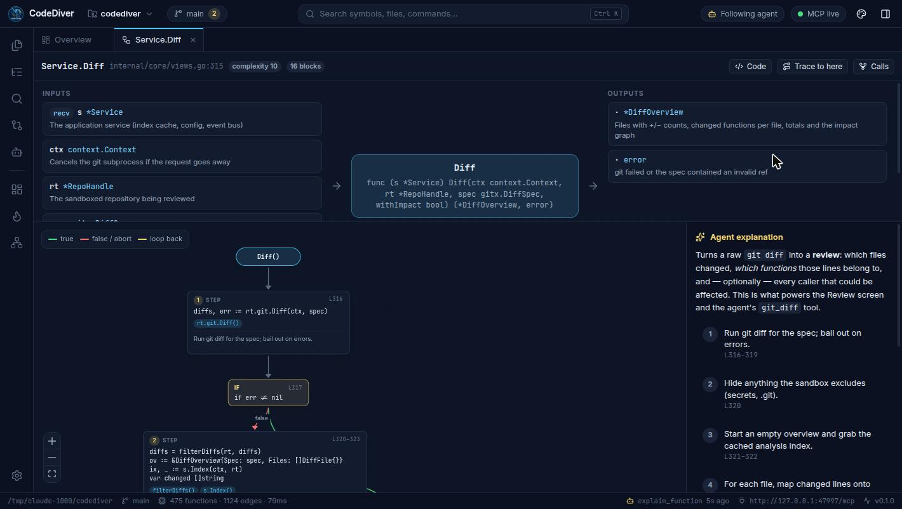
Know what you're looking at before answering.
get_developer_context the file, line, selection and function you have openrepo_overview languages, entry points, hotspotslist_repos · list_files · read_fileget_file_summary every function, type and variable in a filesearch_code · search_symbols · get_symbolPrecise answers instead of guesses from grep.
trace_to every path that reaches a functionget_call_graph callers and callees, interface dispatch resolvedget_function_flow the control-flow graph of a functionget_dependencies · get_typesgit_diff · git_log · git_status · get_heatmapPut understanding on your screen, not just in chat.
start_walkthrough a guided, step-by-step code tourexplain_function inputs, outputs and logic, pinned to the graphshow_diagram Mermaid or interactive diagrams linked to codeannotate_code inline notes in the editorshow_code open a file and highlight what mattersAgents propose. You decide.
propose_changes a reviewable change set; nothing is written until you acceptget_proposal your decision and feedback, back to the agentAgents can't write files any other way.
CodeDiver runs a local MCP server at http://127.0.0.1:47474/mcp. Stdio-only clients use the built-in bridge: codediver mcp.
claude mcp add --transport http codediver http://127.0.0.1:47474/mcp// ~/.cursor/mcp.json
{ "mcpServers": { "codediver": { "url": "http://127.0.0.1:47474/mcp" } } }// .vscode/mcp.json
{ "servers": { "codediver": { "type": "http", "url": "http://127.0.0.1:47474/mcp" } } }// claude_desktop_config.json
{ "mcpServers": { "codediver": { "command": "codediver", "args": ["mcp"] } } }# ~/.codex/config.toml
[mcp_servers.codediver]
command = "codediver"
args = ["mcp"]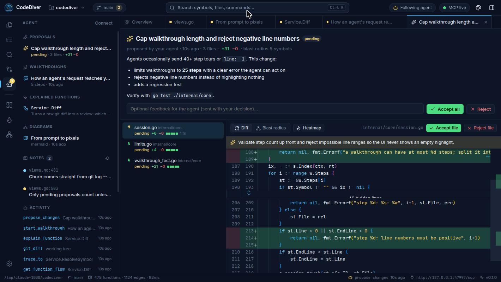
Walkthroughs
Ask “walk me through how a request reaches the database” and your agent builds a guided tour you can step through at your own pace.
The point isn't for the agent to know your codebase. It's for you to.
Agents can draw sequence, flow, class and state diagrams with Mermaid — or interactive graphs whose nodes open the code they describe. Architecture stops living only in someone's head.
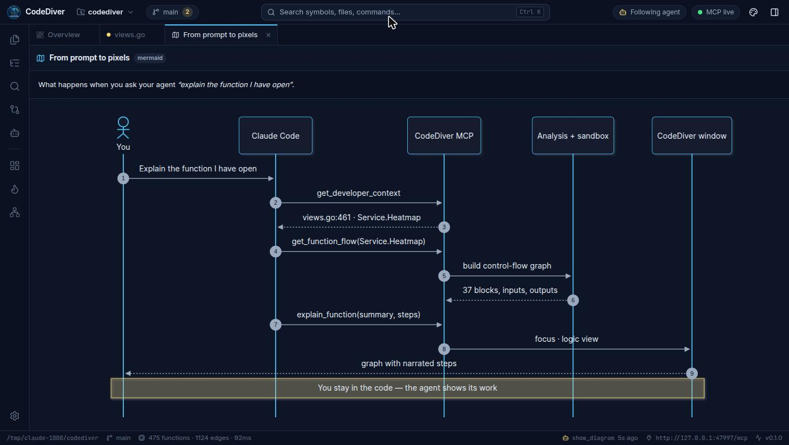
Proposals & review
Agents submit changes as proposals. You get a visual review — not a wall of text in a chat.
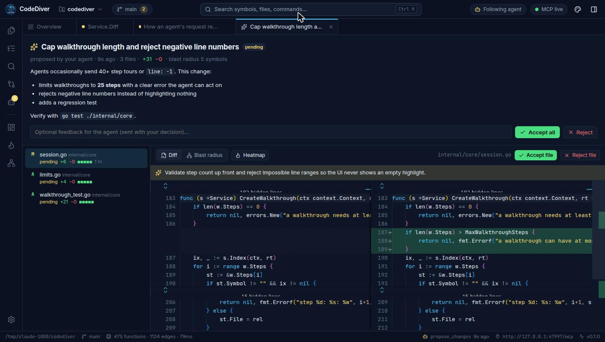
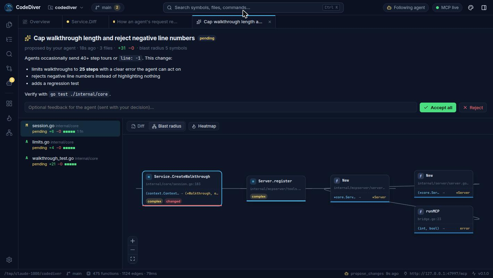
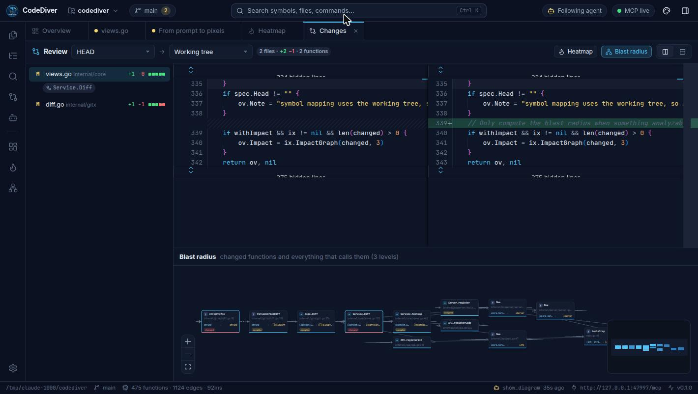
On your own, too
Everything the agent can show you, you can open with a click.
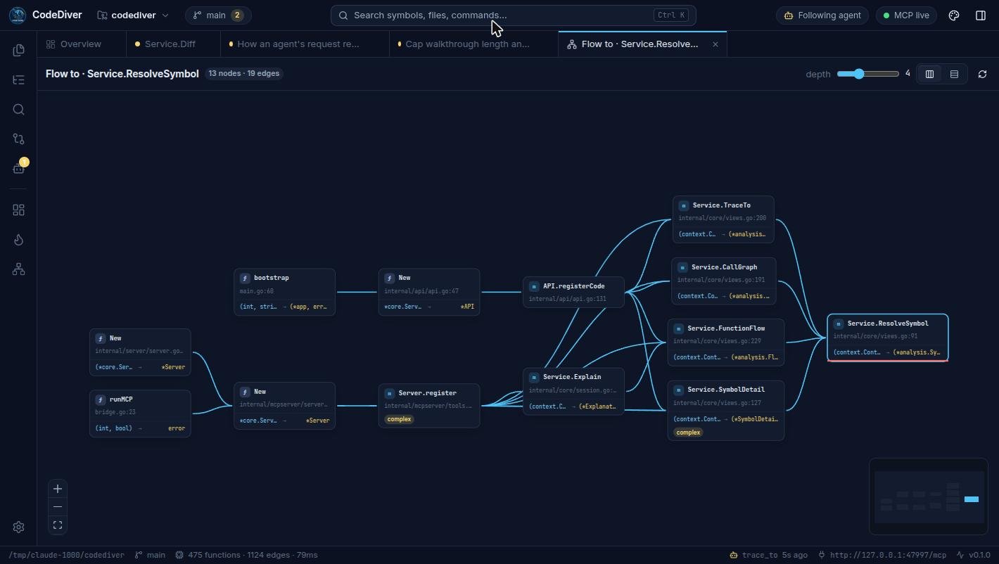
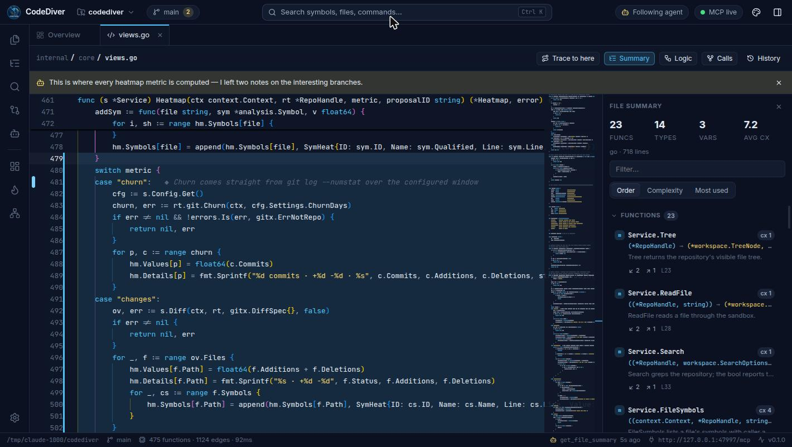
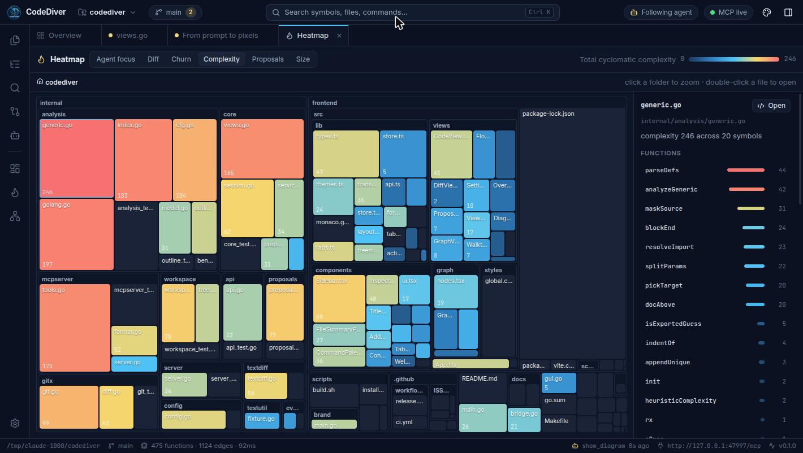
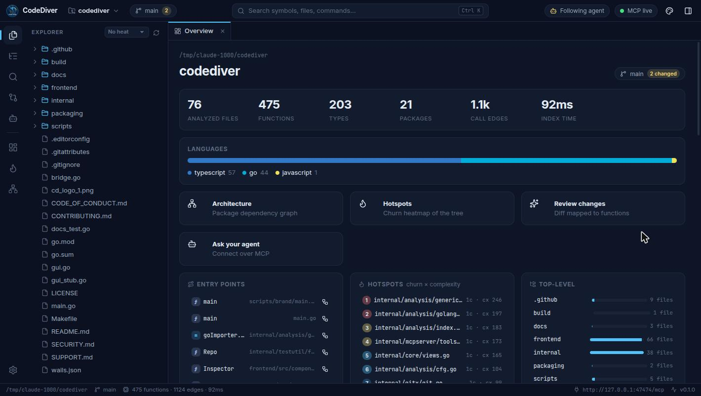
Safety model
.. or symlink escapes; .git, .env*, keys and your own globs are invisible.127.0.0.1, protected against DNS rebinding and cross-site requests. Your code never leaves your machine.Type-checked call graphs with interface dispatch, control-flow graphs, types, variables — no Go toolchain needed.
TypeScript, JavaScript, Python, Rust, Java, Kotlin, C#, C, C++, Ruby, PHP, Swift, Scala, Dart, Lua — functions, classes, parameters, docs, call edges and imports.
Syntax highlighting, search, git history and diffs, heatmaps, proposals, walkthroughs and agent explanations.
Free and open source under the MIT license.
curl -fsSL https://raw.githubusercontent.com/aitakemyjob/codediver/main/scripts/install.sh | shUniversal app for Apple Silicon & Intel. Linux: .deb, .rpm, .tar.gz (x64, ARM64).
irm https://raw.githubusercontent.com/aitakemyjob/codediver/main/scripts/install.ps1 | iexInstaller or portable .exe. Uses the WebView2 runtime built into Windows.
codediver serveThe same UI in your browser — great for remote dev boxes. Binaries for every OS and architecture.